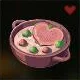

The Creamy Heart Soup
The World Famous Health-Recovering Soup

Ingredients:
- 2 cups of chicken.
- 1 cup of heavy cream
- 3 radishes, finely sliced
- Salt and pepper
Instructions:
- In a pot, bring the broth to a simmer.
- Add the radishes and truffles, and let it simmer for about 10 minutes.
- Stir in the heavy cream, and allow the soup to heat through without boiling. Season with salt and pepper.
- Salt and pepper
Description:
A velvety soup with the gentle flavor of radish and the richness of truffle.
Its creamy consistency warms the heart and fills the tummy, perfect for a comforting meal.